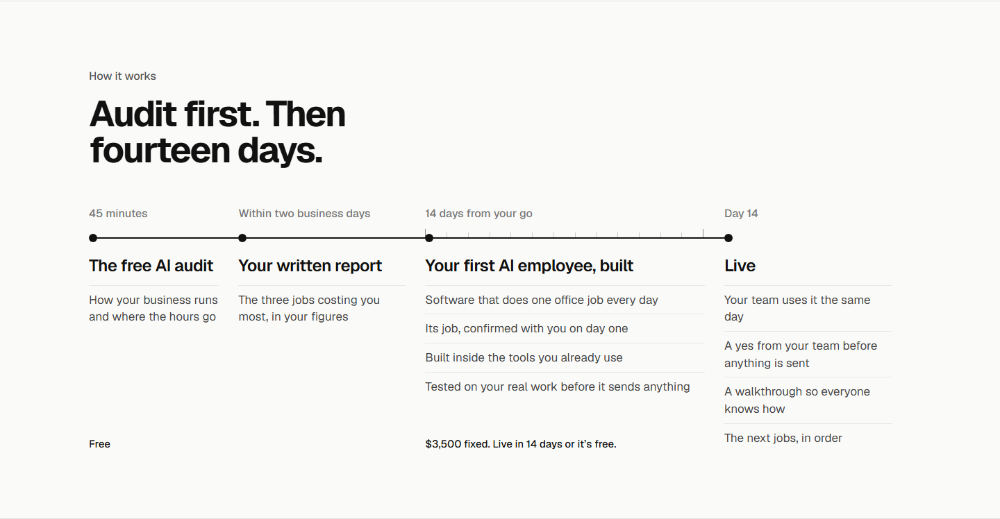
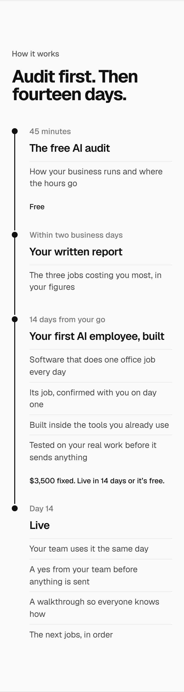
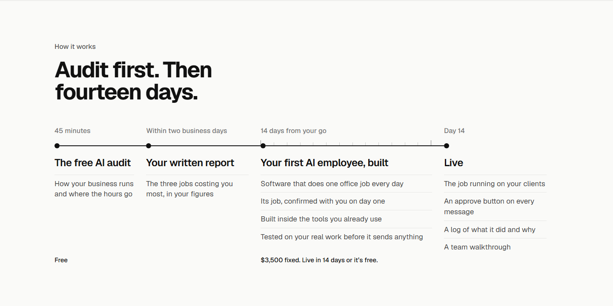
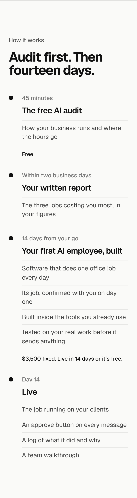

/pilot section 3, How it works: the heading and the rows under Live, three ways each
Drawn by changing the words on the live section. Pick one heading and one set of rows. 1440 left, 375 right.
The heading (rows as today)
Today: Audit first. Then fourteen days.
A. Your first AI employee in four steps.Recommended: top score with his shape, the four stops named for what they make.
B. From the audit to day 14.The span the line covers, nothing more.
C. What happens after you book.The owner’s own question as a statement; the 24 Oct way back in.
The rows under Live (heading as today)
A: Doing the job on your actual clients / Nothing sent until your team says yes / A walkthrough with your team / The next jobs to hand over, in orderrecommended: one fact a row, and "your team says yes" is his own heading’s phrase
B: Your team uses it the same day / A yes from your team before anything is sent / A walkthrough so everyone knows how / The next jobs, in orderthe owner’s day: rows 1 and 3 are the pre-tone-pass rows he never objected to


C: The job running on your clients / An approve button on every message / A log of what it did and why / A team walkthroughthe run sheet’s own list: the log is a new fact, the next jobs drop to the questions

